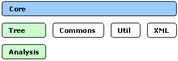
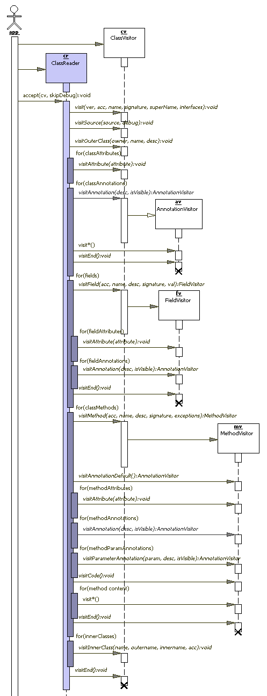
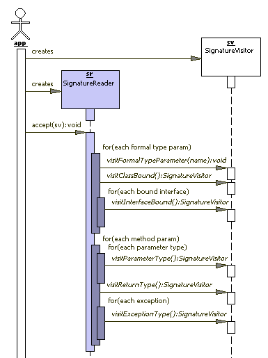
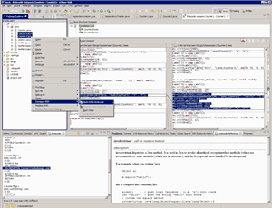
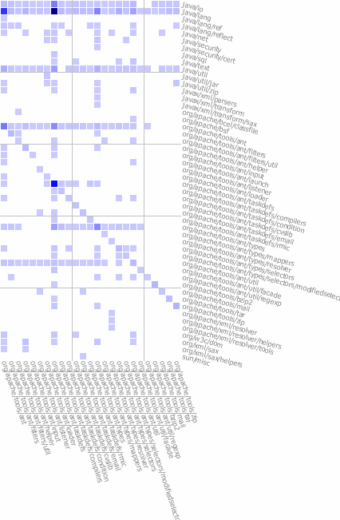

Introduction to the ASM 2.0 Bytecode Framework
Introduction to the ASM 2.0 Bytecode Framework
Introduction to the ASM 2.0 Bytecode Framework
Introduction to the ASM 2.0 Bytecode FrameworkJava features such as dynamic class loading and reflection make it a dynamic language. However, in many cases, reflection is not sufficient, and developers need to generate bytecode from non-Java source code, such as scripting languages like Groovy (JSR-241) or BeanShell (JSR-274), or from metadata such as an OR-mapping configuration. When working with existing classes, and especially when original Java sources are not available, some tools may need to do a static analysis of the interdependencies or even method behavior in order to produce test coverage or metrics, or to detect bugs and anti-patterns. New features added to into Java 5, such as annotations and generics, affected bytecode structure and require special attention from bytecode manipulation tools to maintain good performance. This article will give an overview of one of the smallest and fastest bytecode manipulation frameworks available for Java.
The ASM bytecode manipulation framework is written in Java and uses a visitor-based approach to generate bytecode and drive transformations of existing classes. It allows developers to avoid dealing directly with a class constant pool and offsets within method bytecode, thus hiding bytecode complexity from the developer and providing better performance, compared to other tools such as BCEL, SERP, or Javassist.
ASM is divided into several packages that allow flexible bundling. The packaging arrangement is shown in Figure 1.

Figure 1. Arrangement of ASM packages
The next few sections will give an introduction to the Core package of the
ASM framework. To get a better understanding of the organization of this
package, you have to have some basic understanding of the bytecode structures
that are defined in the JVM specification.
Here is a high-level diagram of the class file format ([*] marks
repeatable structures).
[1]-------------------------------------------+
| Header and Constant Stack |
+--------------------------------------------+
| [*] Class Attributes |
[2]------------+------------------------------+
| [*] Fields | Field Name, Descriptor, etc |
| +------------------------------+
| | [*] Field Attributes |
[3]------------+------------------------------+
| [*] Methods | Method Name, Descriptor, etc |
| +------------------------------|
| | Method max stack and locals |
| |------------------------------|
| | [*] Method Code table |
| |------------------------------|
| | [*] Method Exception table |
| |------------------------------|
| | [*] Method Code Attributes |
| +------------------------------|
| | [*] Method Attributes |
+-------------+------------------------------+
Here are a few things to notice:
As you can see, bytecode tweaking isn't easy. However, the ASM framework reduces the complexity of the underlying structures and provides a simplified API that still allows for access to all bytecode information and enables complex transformations.
The Core package uses a push approach (similar to the "Visitor" design pattern,
which is also used in the SAX API for
XML processing) to walk trough complex bytecode structures. ASM defines several
interfaces, such as ClassVisitor (section [1] in the class file
format diagram above), FieldVisitor (section [2]),
MethodVisitor (section [3]), and AnnotationVisitor.
AnnotationVisitor is a special interface that allows you to express
hierarchical annotation structures. The next few paragraphs will show how these
interfaces interact with each other and how they can be used together to
implement bytecode transformations and/or capture information from the
bytecode.
The Core package can be logically divided into two major parts:
ClassReader or a custom class
that can fire the proper sequence of calls to the methods of the above visitor
classes.
ClassWriter,
FieldWriter, MethodWriter, and
AnnotationWriter), adapters (ClassAdapter and
MethodAdapter), or any other classes implementing the above
visitor interfaces. Figure 2 shows the sequence diagram for the common producer-consumer interaction.

Figure 2. Sequence diagram for producer-consumer
interaction
In this interaction, a client application creates ClassReader
and calls the accept() method, passing a concrete
ClassVisitor instance as a parameter. Then ClassReader
parses the class and fires "visit" events to ClassVisitor for each
bytecode fragment. For repeated contexts, such as fields, methods, or
annotations, a ClassVisitor may create child visitors derived from
the corresponding interface (FieldVisitor,
MethodVisitor, or AnnotationVisitor) and return them
to the producer. When a producer receive a null value for
FieldVisitor or MethodVisitor, it skips that fragment
of the class (e.g., a ClassReader wouldn't even parse the
corresponding bytecode section in such a case, which leads to a sort of "lazy
loading" feature driven by the visitors). Otherwise, the corresponding
subcontext events are delegated to the child visitor instance. At the end of
each subcontext, the producer calls the visitEnd() method and then
moves on to the next section (e.g., the next field, method, etc.).
Bytecode consumers can be linked together in a "Chain of
responsibility" pattern by either manually delegating events to the next
visitor in the chain, or with using visitors derived from
ClassAdapter and/or MethodAdapter that delegate all
visit methods to their underlying visitors. Those delegators act as bytecode
consumers from one side and as bytecode producers from the other. They can
decide to modify natural delegation in order to implement specific bytecode
transformation:
The chain can be ended by a ClassWriter visitor, which will
produce the resulting bytecode. For example:
ClassWriter cw = new ClassWriter(computeMax);
ClassVisitor cc = new CheckClassAdapter(cw);
ClassVisitor tv =
new TraceClassVisitor(cc, new PrintWriter(System.out));
ClassVisitor cv = new TransformingClassAdapter(tv);
ClassReader cr = new ClassReader(bytecode);
cr.accept(cv, skipDebug);
byte[] newBytecode = cw.toByteArray();
In the above code, the TransformingClassAdapter implements
custom class transformations and sends the results to the
TraceClassVisitor passed to its constructor.
TraceClassVisitor prints the transformed class and delegates the
same events to CheckClassAdapter, which does simple bytecode
verification and then passes the event to the ClassWriter.
Most of the visit methods receive simple parameters such as int,
boolean, and String. In all visit methods where
String parameters refer to constants within the bytecode, ASM uses
the same representation as used by the JVM. For instance, all class names (e.g.
super class, interfaces, exceptions, owner classes for the field, and methods
referenced from method code) should be specified in the Internal
Form. Field and method descriptors (usually the desc parameter)
also should be in JVM
representation. The same approach is taken for signature
parameters used to represent generics information, so they should follow the
grammar defined in Section 4.4.4 of the Revised
Class File Format (PDF). This approach helps avoid unnecessary calculations
when no transformation is required. To help construct and parse such
descriptors, there is a Type class that provides several static
methods:
String getMethodDescriptor(Type returnType, Type[]
argumentTypes)
String getInternalName(Class c)
String getDescriptor(Class c)
String getMethodDescriptor(Method m)
Type getType(String typeDescriptor)
Type getType(Class c)
Type getReturnType(String methodDescriptor)
Type getReturnType(Method m)
Type[] getArgumentTypes(String methodDescriptor)
Type[] getArgumentTypes(Method m) Note that these descriptors are using an "erasured"
representation, which does not contain generics information. Generics info is
actually stored as a separate bytecode attribute, but ASM takes care of this
attribute and passes the generic signature string in a signature
parameter of the appropriate visit methods. The value of the
signature string also uses the JVM representation (see Section
4.4.4 in the "Class
File Format" (PDF) as revised for Java 5), which uniquely maps from the
generic declarations in Java code, but presents an additional challenge for
tools that need to retrieve details from generic types. To handle signatures,
ASM provides SignatureVisitor, SignatureReader, and
SignatureWriter classes modelled in a way similar to other ASM
visitors, as illustrated in Figure 3.

Figure 3. Sequence diagram for Signature classes
The Util package contains TraceSignatureVisitor, which
implements SignatureVisitor and allows you to convert a
signature value into a Java declaration with generic types. The
following example converts a method signature into a Java method
declaration.
TraceSignatureVisitor v =
new TraceSignatureVisitor(access);
SignatureReader r = new SignatureReader(sign);
r.accept(v);
String genericDecl = v.getDeclaration();
String genericReturn = v.getReturnType();
String genericExceptions = v.getExceptions();
String methodDecl = genericReturn + " " +
methodName + genericDecl;
if(genericExceptions!=null) {
methodDecl += " throws " + genericExceptions;
}
Up to this point, we have talked about the general design of the ASM framework and manipulating class structure. However, the most interesting part is how ASM handles method code.
In ASM, a method declaration is represented by the
ClassVisitor.visitMethod(), and the rest of the method bytecode
artifacts (Section [3] on class file format
diagram) are represented by number of the visit methods in
MethodVisitor. These methods are called in the following order,
where "*" marks repeated methods and "?" marks methods that can be called once
at most. In addition, the visit...Insn and
visitLabel methods must be called in the sequential order of the
bytecode instructions of the visited code, and the
visitTryCatchBlock, visitLocalVariable, and
visitLineNumber methods must be called after the labels passed as
arguments have been visited.
| ? | visitAnnotationDefault |
Visits the default value for annotation interface method |
| * | visitAnnotation |
Visits a method annotation |
| * | visitParameterAnnotation |
Visits a method parameter annotation |
| * | visitAttribute |
Visits a non-standard method attribute |
| ? | visitCode |
Starts the visit of the method's code for non-abstract and non-native methods |
| * | visitInsn |
Visits a zero operand instruction: NOP,
ACONST_NULL, ICONST_M1, ICONST_0,
ICONST_1, ICONST_2, ICONST_3,
ICONST_4, ICONST_5, LCONST_0,
LCONST_1, FCONST_0, FCONST_1,
FCONST_2, DCONST_0, DCONST_1,
IALOAD, LALOAD, FALOAD,
DALOAD, AALOAD, BALOAD,
CALOAD, SALOAD, IASTORE,
LASTORE, FASTORE, DASTORE,
AASTORE, BASTORE, CASTORE,
SASTORE, POP, POP2,
DUP, DUP_X1, DUP_X2,
DUP2, DUP2_X1, DUP2_X2,
SWAP, IADD, LADD,
FADD, DADD, ISUB,
LSUB, FSUB, DSUB,
IMUL, LMUL, FMUL,
DMUL, IDIV, LDIV,
FDIV, DDIV, IREM,
LREM, FREM, DREM,
INEG, LNEG, FNEG,
DNEG, ISHL, LSHL,
ISHR, LSHR, IUSHR,
LUSHR, IAND, LAND,
IOR, LOR, IXOR, LXOR,
I2L, I2F, I2D, L2I,
L2F, L2D, F2I, F2L,
F2D, D2I, D2L, D2F,
I2B, I2C, I2S, LCMP,
FCMPL, FCMPG, DCMPL,
DCMPG, IRETURN, LRETURN,
FRETURN, DRETURN, ARETURN,
RETURN, ARRAYLENGTH, ATHROW,
MONITORENTER, or MONITOREXIT. |
visitFieldInsn |
Visits a field instruction: GETSTATIC,
PUTSTATIC, GETFIELD or
PUTFIELD. | |
visitIntInsn |
Visits an instruction with a single int operand: BIPUSH,
SIPUSH, or NEWARRAY. | |
visitJumpInsn |
Visits a jump instruction: IFEQ, IFNE,
IFLT, IFGE, IFGT,
IFLE, IF_ICMPEQ, IF_ICMPNE,
IF_ICMPLT, IF_ICMPGE, IF_ICMPGT,
IF_ICMPLE, IF_ACMPEQ, IF_ACMPNE,
GOTO, JSR, IFNULL, or
IFNONNULL. | |
visitTypeInsn |
Visits a type instruction: NEW, ANEWARRAY,
CHECKCAST, or INSTANCEOF. | |
visitVarInsn |
Visits a local variable instruction: ILOAD,
LLOAD, FLOAD, DLOAD,
ALOAD, ISTORE, LSTORE,
FSTORE, DSTORE, ASTORE, or
RET. | |
visitMethodInsn |
Visits a method instruction: INVOKEVIRTUAL,
INVOKESPECIAL, INVOKESTATIC, or
INVOKEINTERFACE. | |
visitIincInsn |
Visits an IINC instruction. | |
visitLdcInsn |
Visits an LDC instruction. | |
visitMultiANewArrayInsn |
Visits a MULTIANEWARRAY instruction. | |
visitLookupSwitchInsn |
Visits a LOOKUPSWITCH instruction. | |
visitTableSwitchInsn |
Visits a TABLESWITCH instruction. | |
visitLabel |
Visits a label. | |
visitLocalVariable |
Visits a local variable declaration. | |
visitLineNumber |
Visits a line number declaration. | |
visitTryCatchBlock |
Visits a try-catch block. | |
visitMaxs |
Visits the maximum stack size and the maximum number of local variables of the method. | |
visitEnd |
Visits the end of the method. | |
Note that the visitEnd method must always be
called at the end of method processing. ClassReader does that for
you, but it should be taken care of in a custom bytecode producer; e.g., when a
class is generated from scratch or when new methods are introduced.
Also note that if a method actually has some bytecode (i.e., if it is not
abstract and not a native method), then visitCode must be called
before the first visit...Insn call, and the visitMaxs
method must be called after last visit...Insn call.
Each of the visitIincInsn, visitLdcInsn,
visitMultiANewArrayInsn, visitLookupSwitchInsn, and
visitTableSwitchInsn methods uniquely represent one bytecode
instruction. The rest of the visit...Insn methods--namely,
visitInsn, visitFieldInsn, visitIntInsn,
visitJumpInsn, visitTypeInsn,
visitVarInsn, and visitMethodInsn--represent more then
one bytecode instruction, with their opcodes passed in a first method parameter.
All constants for those opcodes are defined in the Opcodes
interface. This approach is very performant for bytecode parsing and formatting.
Unfortunately, this could be a challenge to the developer who is trying to
generate code, because ClassWriter does not verify these
constraints. However, there is a CheckClassAdapter that could be
used during development to test generated code.
Another challenge with any kind of bytecode generation or transformation is
that offsets within method code can change and should be adjusted when
additional instructions are inserted or removed from the method code. This is
applicable to parameters of all jump opcodes (if,
goto, jsr, and switch), as well as to
try-catch blocks, line number and local variable declarations, and to some of
the special attributes (e.g., StackMap, used by CLDC). However, ASM
hides this complexity from the developer. In order to specify positions in the
method bytecode and not have to use absolute offsets, a unique instance of the
Label class should be passed to the visitLabel method.
Other MethodVisitor methods such as visitJumpInsn,
visitLookupSwitchInsn, visitTableSwitchInsn,
visitTryCatchBlock, visitLocalVariable, and
visitLineNumber can use these Label instances even
before the visitLabel call, as long as the instance will be called
later in a method.
The above may sound complicated, and at first glance requires deep knowledge
of the bytecode instructions. However, using ASMifierClassVisitor
on compiled classes allows you to see how any given bytecode could be generated
with ASM. Moreover, applying ASMifier on two compiled classes (an
original one and one after applying the required transformation) and then
running diff on the output gives a good hint as to what ASM calls
should be used in the transformer. This process is explained in more detail in
several articles (see the Resources
section below). There is even a plugin for the Eclipse
IDE, shown in Figure 4, that provides a great support for generating ASM
code and comparing ASMifier output right from Java sources, and
also includes a contextual bytecode reference.

Figure 4. Eclipse ASM plugin (Click on the
picture to see a full-size image)
There are already a few articles that explain how to generate bytecode with ASM (see the Resources section for some links). For a change, let's see how ASM can be used to analyze existing classes. One interesting application is to capture information about external classes or packages used by any given module or .jar file. For simplicity, this example will only capture outgoing dependencies and won't keep track of the dependency types (e.g., superclass, method parameters, local variable types, etc.).
Notice that for analysis purposes, we don't need to create new instances of child visitors for annotations, fields, and methods. All of these visitors, including class and signature visitor, could be implemented in a single class:
public class DependencyVisitor implements
AnnotationVisitor, SignatureVisitor,
ClassVisitor, FieldVisitor, MethodVisitor {
...
For this example, we will track dependencies between packages, so individual classes should be aggregated by the package name:
private String getGroupKey(String name) {
int n = name.lastIndexOf('/');
if(n>-1) name = name.substring(0, n);
packages.add(name);
return name;
}
In order to collect dependencies, visitor interfaces such as
ClassVisitor, AnnotationVisitor,
FieldVisitor, and MethodVisitor should selectively
aggregate parameters of their methods. There are several common cases:
First of all, there are class names in internal
form (super class, interfaces, exceptions, field and method owners); e.g.,
java/lang/String:
private void addName(String name) {
if(name==null) return;
String p = getGroupKey(name);
if(current.containsKey(p)) {
current.put(p, current.get(p)+1);
} else {
current.put(p, 1);
}
}
In this case, current is the current group of dependencies
(e.g., package).
Another case is type descriptors (annotations, enum and field types,
parameters of the newarray instruction, etc.); e.g.,
Ljava/lang/String;, J, and [[[I. These
can be parsed with Type.getType( desc) to obtain the class name in
internal form:
private void addDesc(String desc) {
addType(Type.getType(desc));
}
private void addType(Type t) {
switch(t.getSort()) {
case Type.ARRAY:
addType(t.getElementType());
break;
case Type.OBJECT:
addName(t.getClassName().replace('.','/'));
break;
}
}
Method descriptors used in method declarations and in invoke instructions
describe parameter types and return a type; e.g.,
([java/lang/String;II)V. The helper methods
Type.getReturnType(methodDescriptor) and
Type.getArgumentTypes(methodDescriptor) can parse such descriptors
and extract parameter and return types.
private void addMethodDesc(String desc) {
addType(Type.getReturnType(desc));
Type[] types = Type.getArgumentTypes(desc);
for(int i = 0; i < types.length; i++) {
addType(types[ i]);
}
}
The special case is the signature parameter used in many "visit"
methods to specify Java 5 generics info. If it is present (i.e., non-null), this
parameter overrides the descriptor parameter and contains an encoded form of the
generics information. SignatureReader class could be used to parse
this value. So we can implement a SignatureVisitor, which will be
called for each signature artifact.
private void addSignature(String sign) {
if(sign!=null) {
new SignatureReader(sign).accept(this);
}
}
private void addTypeSignature(String sign) {
if(sign!=null) {
new SignatureReader(sign).acceptType(this);
}
}
Methods implementing the ClassVisitor interface, such as
visit(), visitField(), visitMethod(), and
visitAnnotation(), can collect information about dependencies on
superclasses and interfaces, types used by fields, method parameters, return
values, and exceptions, as well as types of the annotations. For example:
public void visit(int version, int access,
String name, String signature,
String superName, String[] interfaces) {
String p = getGroupKey(name);
current = groups.get(p);
if(current==null) {
current = new HashMap<String,Integer>();
groups.put(p, current);
}
if(signature==null) {
addName(superName);
addNames(interfaces);
} else {
addSignature(signature);
}
}
public FieldVisitor visitField(int access,
String name, String desc,
String signature, Object value) {
if(signature==null) {
addDesc(desc);
} else {
addTypeSignature(signature);
}
if(value instanceof Type) {
addType((Type) value);
}
return this;
}
public MethodVisitor visitMethod(int access,
String name, String desc,
String signature, String[] exceptions) {
if(signature==null) {
addMethodDesc(desc);
} else {
addSignature(signature);
}
addNames(exceptions);
return this;
}
public AnnotationVisitor visitAnnotation(
String desc, boolean visible) {
addDesc(desc);
return this;
}
Methods implementing the MethodVisitor interface can collect
dependencies on types of the parameter annotations and types used in bytecode
instructions that can use object references:
public AnnotationVisitor
visitParameterAnnotation(int parameter,
String desc, boolean visible) {
addDesc(desc);
return this;
}
/**
* Visits a type instruction
* NEW, ANEWARRAY, CHECKCAST or INSTANCEOF.
*/
public void visitTypeInsn(int opcode,
String desc) {
if(desc.charAt(0)=='[') {
addDesc(desc);
} else {
addName(desc);
}
}
/**
* Visits a field instruction
* GETSTATIC, PUTSTATIC, GETFIELD or PUTFIELD.
*/
public void visitFieldInsn(int opcode,
String owner, String name, String desc) {
addName(owner);
addDesc(desc);
}
/**
* Visits a method instruction INVOKEVIRTUAL,
* INVOKESPECIAL, INVOKESTATIC or
* INVOKEINTERFACE.
*/
public void visitMethodInsn(int opcode,
String owner, String name, String desc) {
addName(owner);
addMethodDesc(desc);
}
/**
* Visits a LDC instruction.
*/
public void visitLdcInsn(Object cst) {
if(cst instanceof Type) {
addType((Type) cst);
}
}
/**
* Visits a MULTIANEWARRAY instruction.
*/
public void visitMultiANewArrayInsn(
String desc, int dims) {
addDesc(desc);
}
/**
* Visits a try catch block.
*/
public void visitTryCatchBlock(Label start,
Label end, Label handler, String type) {
addName(type);
}
Now we can use DependencyVisitor to collect dependencies from
the entire .jar file. For example:
DependencyVisitor v = new DependencyVisitor();
ZipFile f = new ZipFile(jarName);
Enumeration<? extends ZipEntry> en = f.entries();
while(en.hasMoreElements()) {
ZipEntry e = en.nextElement();
String name = e.getName();
if(name.endsWith(".class")) {
ClassReader cr =
new ClassReader(f.getInputStream(e));
cr.accept(v, false);
}
}
The collected information can be represented in many different ways. One can build dependency trees and calculate some metrics, or create some visualizations. For example, Figure 5 shows how ant.1.6.5.jar looks in a visualization I built on top of the collected information using some simple Java2D code. The following diagram shows packages from the input .jar on a horizontal axis and external dependencies on a vertical axis. The darker a box's color is, the more times the package is referenced.

Figure 5. Dependencies in ant.1.6.5.jar, as discovered
with ASM
The complete code of this tool will be included into the next ASM release. It can be also obtained from ASM CVS.
You can skip this section if you haven't used ASM 1.x.
The major structural change in ASM 2.0 is that all J2SE 5.0 features are
built into the ASM visitor/filter event flow. So the new API allows you to deal
with generics and annotations in a much more lightweight and semantically
natural way. Instead of explicitly creating annotation attribute instances, we
have generics and annotation data within the event flow. For example, in ASM
1.x, the ClassVisitor interface used the following method:
CodeVisitor visitMethod(int access, String name,
String desc, String[] exceptions,
Attribute attrs);
This has been split into several methods in ASM 2.0:
MethodVisitor visitMethod(int access,
String name, String desc, String signature,
String[] exceptions)
AnnotationVisitor visitAnnotation(String desc,
boolean visible)
void visitAttribute(Attribute attr)
In the 1.x API, in order to define generics info, you'd have to create
specific instances of the SignatureAttribute, and to define
annotations, you'd need instances of the
RuntimeInvisibleAnnotations,
RuntimeInvisibleParameterAnnotations,
RuntimeVisibleAnnotations,
RuntimeVisibleParameterAnnotations, and
AnnotationDefault. Then you'd put these instances into the
attrs parameter of the appropriate visit method.
In ASM 2.0, a new signature parameter has been added to
represent generics info. The new AnnotationVisitor interface is
used to handle all annotations. There is no need to create an attrs
collection, and annotation data is more strictly typed. However, when migrating
existing code, especially when "adapter" classes have been used; it is necessary
to be careful and make sure that all methods overwritten from the adapter are
updated to new signatures, because the compiler will raise no warnings.
There are several other changes introduced in ASM 2.0.
FieldVisitor and
AnnotationVisitor.
CodeVisitor into MethodVisitor.
visitCode() method added to the
MethodVisitor to easily detect first instruction.
Constants interface renamed into Opcodes.
attrs package are incorporated
into ASM's event model.
TreeClassAdapter and TreeCodeAdapter are
incorporated into the ClassNode and MethodNode.
LabelNode class to make elements of
instructions collection common type of
AbstractInsnNode. In general, it would be a good idea to run tool like JDiff and review the differences between the ASM 1.x and 2.0 APIs.
ASM 2.0 hides many bytecode complexities from the developer and allows one to efficiently work with Java features on a bytecode level. The framework allows you not only to transform and generate bytecode, but also to pull out significant details about existing classes. The API is being constantly improved--version 2.0 incorporates the generics and annotations introduced in J2SE 5.0. Since then, support for the new features introduced in Mustang (see "Java SE 6 Snapshot Releases") have been added to the ASM framework.